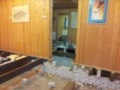
Update gebouw de Graankorrel, eerst de oude vloer eruit!
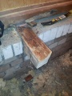
Er werd grondig gewerkt
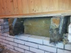
Dat zeg ik, grondig gewerkt
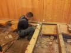
Ieder z'n specialiteit
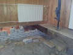
Wat een ruimte, zonder die balken
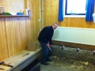
Vele handen...
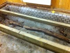
Zeg maar Oud & Nieuw
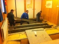
Vereende krachten...
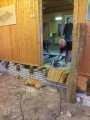
Kijk, zo leg je een vloertje!
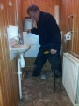
Sommige dingen heb je niet voor het kiezen...
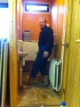
Update kleine kamertje
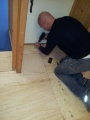
Wat een plaatje van een vloer
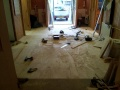
Om trots op te zijn!
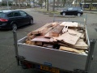
Oh ja, sloophout nog wegbrengen...
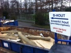
U wordt bedankt, opgeruimd staat netjes!
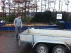
Geklaard die klus.
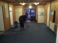
Zienderogen opgeknapt!
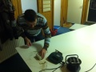
Laatste loodjes.
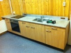
Wat zeg ik, een schitterende keuken.
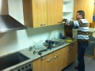
...waar staan de glazen?
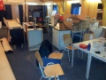
Zo, nog even en alles staat op z'n plaats!
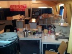
Mooi overzicht zo.
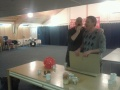
Geld is op, restjes koek eerlijk delen...
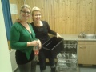
'We hebben er zin an!' Alle harde werkers/-sters; Hartelijk Dank!!